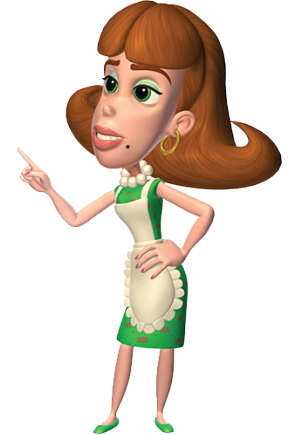
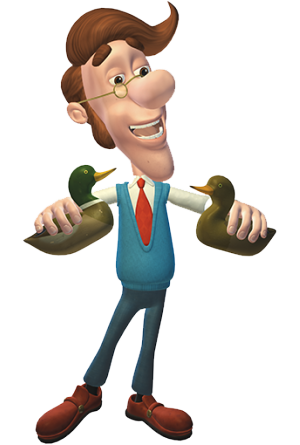

Джуди
Джуди - заботливая и любящая мать по отношению к Джимми и очень нежная по отношению к своему мужу Хью. Однако она расстраивается из-за выходок Джимми и всех неприятностей, которые он причиняет, обычно читая ему лекцию или ставя его на место. Например, в книге "Когда штаны нападают" мы узнаем , что Джуди просила Джимми забрать свои штаны 54 раза подряд, но безрезультатно. Она часто заставляет Джимми делать работу по дому, прежде чем провести эксперимент или отправиться в космос. Это обычно заставляет Джимми находить творческие способы решения своих домашних задач, что приводит к гораздо более серьезным проблемам, таким как изобретение клонов Джимми и Матернотрон.
Иногда намекают, что Джимми, возможно, получил свой суперинтеллект от матери. Один из примеров этого происходит в "See Jimmy Run", где она научно/правильно указывает на недостаток в быстрых кроссовках Джимми, который он не учел. Другой пример имеет место в Maternotron Knows Best, где она впечатляет Джимми, вытаскивая высокоразвитый молекулярный взрывной луч из своего подсобного шкафа, чтобы выключить Maternotron. Она также поместила следящее устройство в кожу Хью, показанное в "Aaahh!! Дикая местность!!" - чтобы убедиться , что он останется в безопасности. Кроме того, Джуди - семейный механик. Ее часто можно найти в гараже, проверяя пробки и точки или добавляя лошадиные силы к семейному родстеру.
Хью
Личность Хью, кажется, находится на причудливой стороне вещей и является тем типом человека, который предпочитает делать все по-своему. Несмотря на свои странные причуды и рассеянность, он по-отечески заботлив, доброжелателен и добродушен. Он просто обожает уток и пироги.
Иногда он проявляет забывчивость, как в "Вражде", когда забывает, что его сосед и отец Карла, Эбенезер Дохляк, уже несколько недель назад вернул свою газонокосилку и позже одолжил ее Сэму Мелвику. Это заставило его и Эбенезера начать вражду друг с другом и отделить своих детей друг от друга. Позже он вспоминает, как Сэм заплатил Шину за то, чтобы тот отправил ему сообщение через свою программу "Протяни руку и прикоснись к другу", сообщив, что Сэм все это время был у него подстриженным газоном и что обе семьи (за исключением Джимми и Карла) начали вражду друг с другом совершенно зря.
Главная